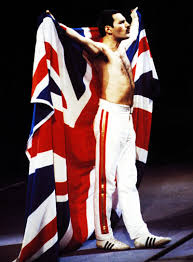
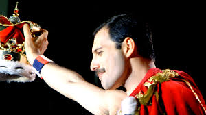
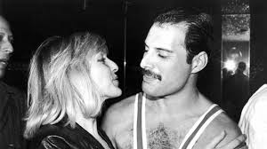
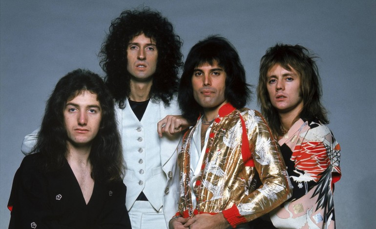
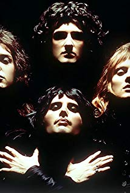
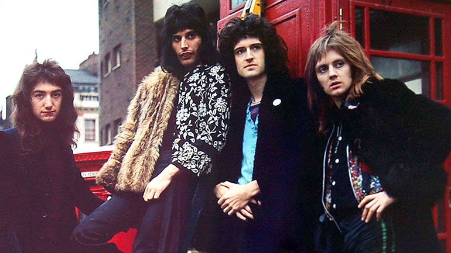
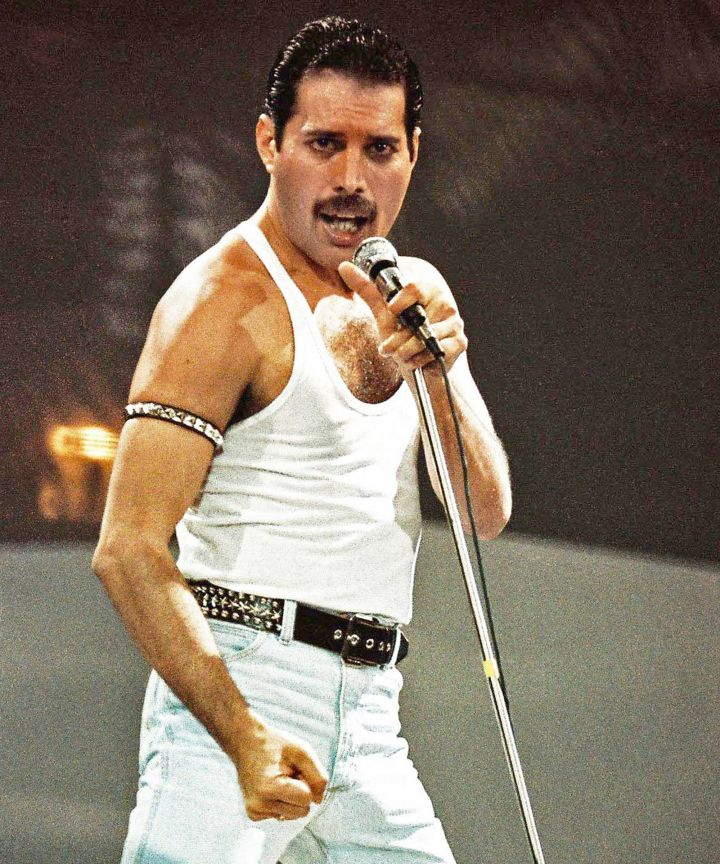
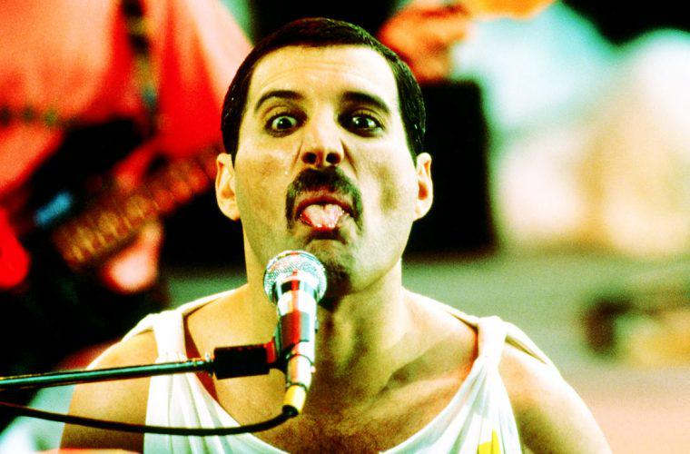
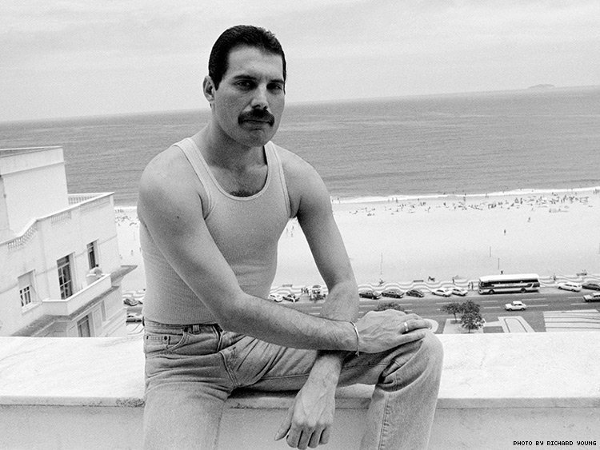
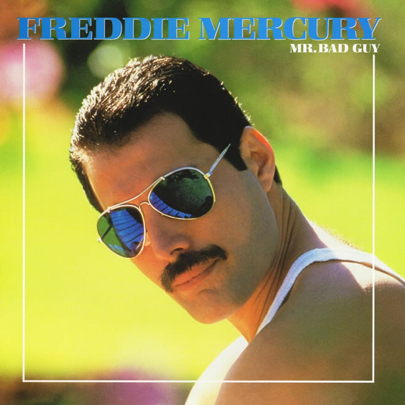

About Freddie
Freddie Mercury (born Farrokh Bulsara; 5 September 1946 – 24 November 1991) was a British singer-songwriter,
record producer and lead vocalist of the rock band Queen.
He is regarded as one of the greatest singers in the history of popular music, and was known for his
flamboyant stage persona and four-octave vocal range.
Mercury was born in Zanzibar to Parsi parents from India. After growing up in Zanzibar and India, his family
fled the Zanzibar Revolution and moved to Middlesex, England, in his late teens. He formed Queen in 1970
with guitarist Brian May and drummer Roger Taylor.
Mercury wrote numerous hits for Queen, including "Bohemian Rhapsody", "Killer Queen", "Somebody to Love",
"Don't Stop Me Now", "Crazy Little Thing Called Love", and "We Are the Champions".
He also led a solo career and served as a producer and guest musician for other artists. Mercury died in
1991 at age 45 due to complications from AIDS, having confirmed the day before his death that he had
contracted the disease.
As a member of Queen, Mercury was inducted into the Rock and Roll Hall of Fame in 2001, the Songwriters Hall
of Fame in 2003, and the UK Music Hall of Fame in 2004.
In 1992, a year after his death, he was awarded the Brit Award for Outstanding Contribution to British
Music, and a tribute concert was held at Wembley Stadium, London. In 2002, he placed number 58 in the BBC's
2002 poll of the 100 Greatest Britons.
The 2018 film about Mercury and Queen, Bohemian Rhapsody, is the highest-grossing musical biographical film
of all time.
Freddie's Photos










go to top.
Q&A
Question 1:
What are the 3 main differences between web1, web2 and web3?
Answer 1:
The main differences are:
- Web 1.0
It is the “readable” phrase of the World Wide Web with only flat data.
There is only limited interaction between sites and users.
Web 1.0 is simply an information portal where users passively receive information without being given the opportunity to post reviews, comments, and feedback.
Also called the "read only" web.
- Web 2.0
It is the “writable” phrase of the World Wide Web with interactive data.
Unlike Web 1.0, Web 2.0 allows interaction between web users and sites.
Web 2.0 encourages participation, collaboration, and information sharing.
Also called the "read-write" web.
Examples of Web 2.0 applications are Youtube, Wiki, Flickr, Facebook, and so on.
- Web 3.0
It is the “executable” phrase of Word Wide Web with dynamic applications, interactive services, and
“machine-to-machine” interaction. Web 3.0 is a semantic web in which computers
can interpret information like humans and intelligently generate and distribute useful content tailored to the
needs of users. One example of Web 3.0 is Tivo, a digital video recorder. Its recording program can search the
web and read what it finds to you based on your preferences.
Also called the "read-write-execute" web.
Question 2:
A use case example of searching the web.
Answer 2:
If we search the web for "music shows", the results will be different in every web version.
- Web 1.0 results: Static pages that contain information about music shows all over the world. Not all pages will be up to date
and there will be no option to search for specific shows or dates inside each website.
- Web 2.0 results: Different pages that contain information about music shows all over the world, blogs about music concerts,
and maybe some Facebook pages of bands. There will be an option to filter shows in specific dates or locations.
- Web 3.0 results: Different pages that contain information about music shows.
The pages will probably have updated information about the most relevant shows for the user,
based on previous searches or based on location.
go to top.